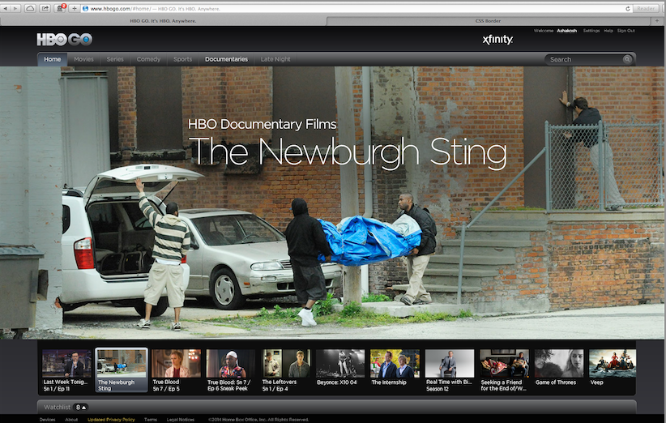
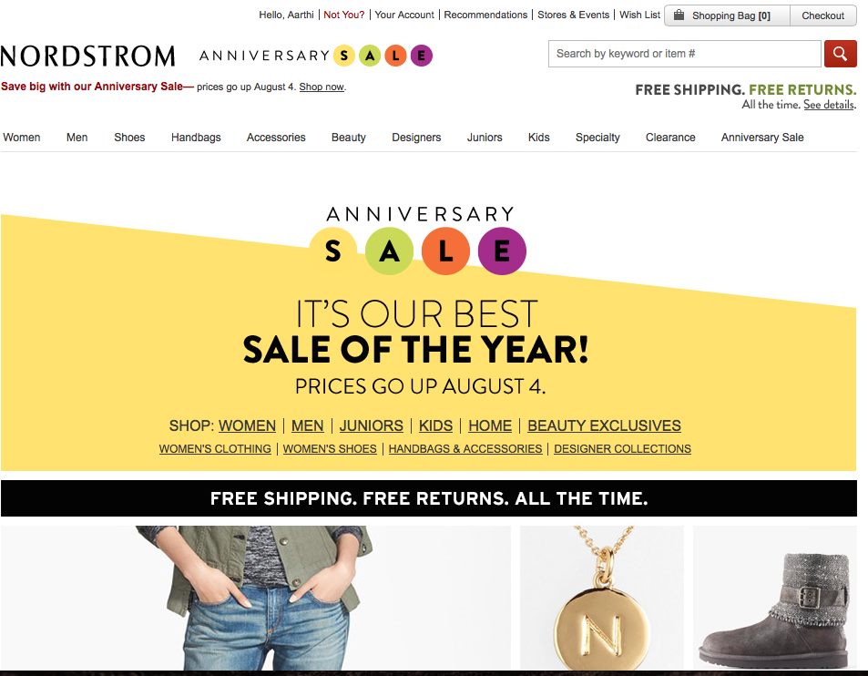
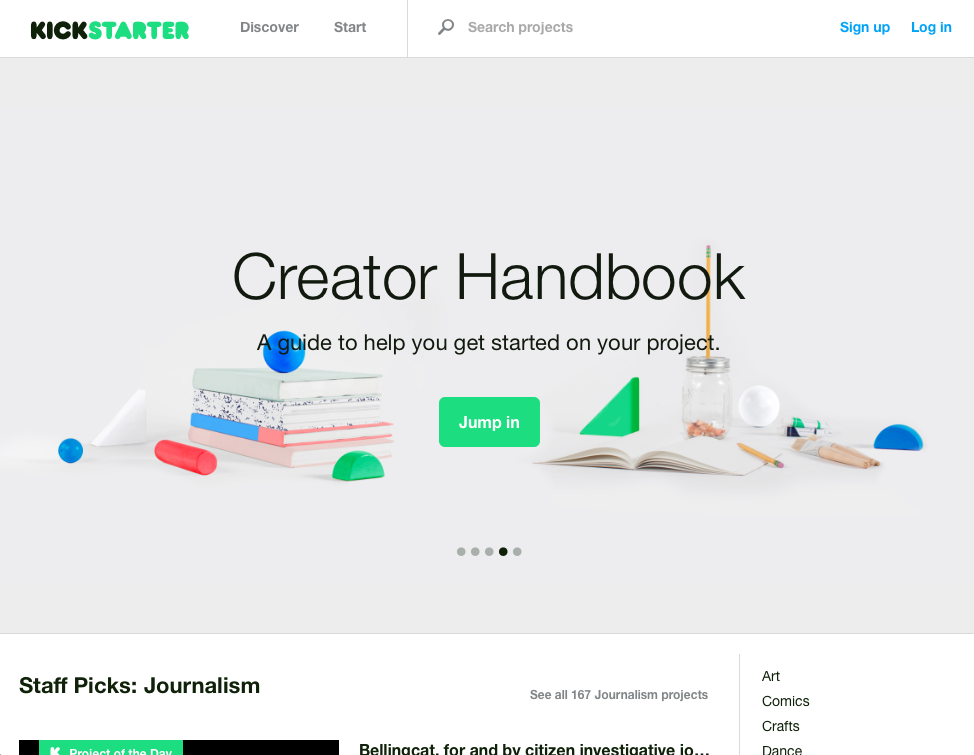

Technical Assignment

HBOGO
-This site is one of my favorite because it looks professional and is easy to navigate.
-My eyes are drawn to the center of screen and as I look back the HBOGO logo. Yes it is the most important area of the website.
-Elegant, Professional, Mobile, Clean, Efficient
-It allows an easy place to see new material and popular shows with a quick click for previews.
-Short summaries, good visuals, titles, genres, recent movies
-It is pretty easy to find from the homepage but the search results are hard to navigate.
-Not easy to browse all contents of the site, but I think that leaves a bit of surprise and discovery which is good for the site.
-I like that I have been at the site, I feel pretty happy and fulfilled from my experience.
-No, this site does not sell anything.

Nordstrom.com
-This site is very well organized and is easy on the eyes with a lot information and still able to direct you to new trends without being overwhelming.
-The eye is drawn to the center of the home page toward new trends and non-sale items. As I look back I see the sub headings and how to navigate the site.
-Creative, Trend setting, organized, appealing, colorful
- Solves the ability to find every item with every designer.
-Informative, concise, objective, good visuals, and clear
- Very easy to find every item on the site but needs to got to each tab.
- Happy and like I want to buy something. Also informed on new trends in fashion.
- This site does sell items, yes I have bought many things. They do a good job directing you to alternate items if something doesn't work.

Kickstarter
-This is an altuistic site with good graphics and good organzaiton of material on the site.
- The main project of the day and the most popular sites below and how close they are to the goal.
-The eye is drawn goals and how close each kickstarter is meeting each goal.
-Bright, interesting, gamelike, inspiring, motivating
-This website solves the problem of motivating people to crowdsource and easily find projects they believe in and want to donate to.
-Informative, Trendsetting, Local, Curiosity, and Excitement
-Moderately easy to find what you are looking for.
-I feel like I learned something and there are good people in the world.
-The site kind of sells other people's ideas. I have "purchased" and it was because I could easily find causes I believed in and were inspired by.